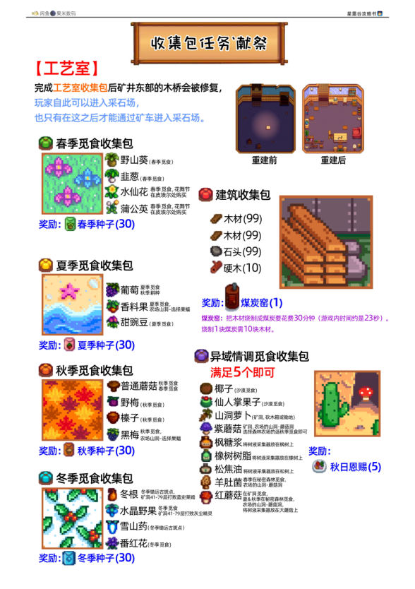

社区中心与献祭
六大房间、收集包与全部奖励，以及社区中心与 Joja 两条路线的取舍。

怎么开始
- 春季 5 日之后的任意雨天，从镇子进入社区中心，会看到祝尼魔并触发剧情。
- 第二天收到法师的信，去法师塔（镇子西侧）对话，学会阅读「祝尼魔文字」。
- 之后社区中心内每个房间的金色卷轴都可阅读，收集包正式开放。
- 把要求的物品放进对应房间的收集包，集满一个包会立刻发放该包的小奖励。
献祭物品一旦放入就无法取回。贵重物品（如五彩碎片、恐龙蛋）先确认是否还有别的用途，尤其是第一次玩。
六大房间与奖励
| 房间 | 主要收集包 | 房间奖励 | 优先级 |
|---|---|---|---|
| 工艺室 | 春季作物、夏季作物、秋季作物、建筑师（木材/石头/硬木）、异域采集 | 修复通往采石场的桥梁 | 中 |
| 茶水间 | 春季作物、夏季作物、秋季作物、品质作物、动物产品、工匠品 | 修复温室 | 最高 |
| 鱼缸 | 河鱼、湖鱼、海鱼、夜钓、蟹笼、特色鱼 | 获得淘金盘（可淘金） | 中 |
| 锅炉房 | 铁匠（铜/铁/金锭）、地质学家（石英/地晶/冻泪/火石英）、冒险家（怪物掉落） | 修复矿车快速旅行 | 高 |
| 布告栏 | 厨师、染料、田野研究、饲料、魔法师 | 全体村民好感提升 | 中 |
| 金库 | 2500 / 5000 / 10000 / 25000 金，共 42500g | 修复巴士，可去沙漠 | 高 |
六个房间全部完成后，社区中心修复，祝尼魔回归，并解锁后续内容（电影院购买、祝尼魔小屋等）。每个小收集包本身也会给一点即时代价不高的奖励，不必为了小奖励改变种植计划。
各房间要点
茶水间：优先冲温室
茶水间包含春、夏、秋三组作物与一组「品质作物」（金星防风草、金星甜瓜、金星南瓜、金星玉米），再加动物产品与工匠品。作物部分可以靠当季种植解决，品质作物需要提前用高级肥料，否则要等第二年。
- 春季就把金星防风草种出来，别等到秋天补。
- 金星甜瓜（夏）、金星南瓜（秋）、金星玉米（夏秋）都要留。
- 动物产品需要大壶牛奶、大鸡蛋等，鸡舍/畜棚要提前升级。
- 工匠品包括奶酪、蛋黄酱、蜂蜜、果酱、布料等，提前把设备做出来。
金库：花钱换巴士
金库不打折，四次捐款共 42500g。修复巴士后可以去沙漠：骷髅洞穴、沙漠节、仙人掌果、沙鱼。越早通车，后期节奏越顺。
锅炉房：矿车网络
铁匠包需要铜锭、铁锭、金锭各一；地质学家包需要四种矿物；冒险家包需要怪物掉落。修复矿车后，镇子、矿洞、采石场、巴士站之间可以快速移动。
鱼缸：淘金盘
鱼缸的物品受季节与天气限制，是最容易拖进度的一间。建议提前列清单，按季节钓。完成后获得淘金盘，可在河边淘金，是古物与矿石的额外来源。
布告栏与工艺室
布告栏的「厨师包」需要多道料理，提前攒食材；「魔法师包」需要虚空精华等怪物掉落。工艺室的异域采集包需要椰子、仙人掌果（沙漠）、洞穴胡萝卜、红蘑菇、紫蘑菇（矿洞/蘑菇洞）。
错过季节怎么办
- 作物类：只能等明年同季。可用温室提前种（温室不受季节限制），或查旅行货车是否有货。
- 鱼类：按季节/天气/时段重钓，鱼缸不要求品质。
- 采集类：多数全年可补，冬季注意「冬季种子」相关产物。
- 怪物掉落：随时可刷，冒险家包最容易补。
温室修好后，把献祭缺的季节作物种在温室里，可以无视季节补齐。这也是「先冲温室」的最大理由。
完成节奏建议
| 阶段 | 目标 | 说明 |
|---|---|---|
| 第一年春夏秋 | 冲茶水间 + 金库 | 温室是最强奖励，巴士打开沙漠 |
| 第一年冬 | 补锅炉房与鱼缸 | 冬季农活少，适合刷矿与钓鱼 |
| 第二年 | 补布告栏与工艺室 | 剩下的多为采集与料理，按清单补 |
熟练玩家通常在第一年秋冬完成社区中心；第一次玩拖到第二年很正常。不必因为错过某个作物重开档，旅行货车与温室都能补救。
社区中心 vs Joja 路线
| 对比 | 社区中心 | Joja |
|---|---|---|
| 启动 | 免费，靠收集 | 5000g 买会员 |
| 总花费 | 金库 42500g + 材料时间 | 约 14 万 g（含会员） |
| 速度 | 受季节限制，通常一年以上 | 有钱就能立刻买项目，最快 |
| 奖励 | 同样的温室、巴士、矿车、淘金盘 | 同样的功能，逐项购买 |
| 结局差异 | 修复社区中心，祝尼魔回归 | 社区中心变成仓库，可买电影院 |
Joja 路线适合「不想被季节卡、只想快点拿温室」的玩家；社区中心路线更有收集乐趣，也不花钱。两条路线的功能奖励基本一致，不影响完美度，选自己喜欢的即可。
买了 Joja 会员并完成任一项目后，社区中心路线即告关闭，无法再改回。做决定前想清楚。